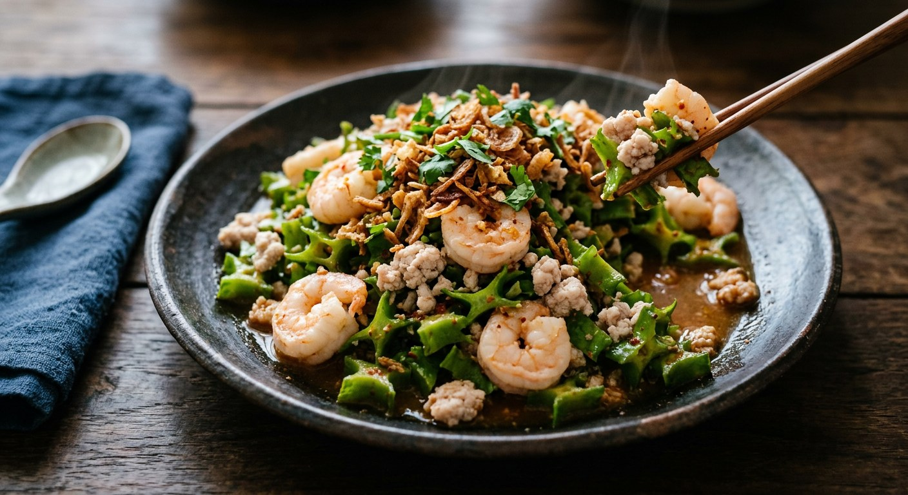

The four-winged bean, blanched for one hot minute and shocked cold, tossed with shrimp and minced pork in a nam phrik phao dressing and a drizzle of coconut cream — texture first, heat second.

ถั่วพู is the winged bean, cut crossways its pods show four frilly wings, and Thais treat it as a salad vegetable first — the star of ครัวบ้านพิม's menu, who wrote her 2011 ยำถั่วพูกุ้งสด post because her mother arrived from the family orchard in Chanthaburi with a bag of beans and a reminder not to let them sit. The other classic uses — ไข่เจียวถั่วพู omelette, แกงส้ม sour curry — all lean on the same property: a pod that stays crisp through heat if you treat it right.
The dish is a stack of textures. The beans are blanched barely — Wongnai's brand recipe times it at one minute exactly, ครัวบ้านพิม watches for the water to come back to the boil, tukata001 on Pantip says "a moment only" — then shocked in iced water. Around them: sweet blanched shrimp, blanched minced pork, and a dressing of น้ำพริกเผา (roasted chilli paste), fish sauce, lime and palm sugar, rounded with coconut cream. On top goes the fried layer — shallots, garlic, dried bird's eye chillies — and usually a soft-boiled egg.
tukata001's recipe exists because she ordered a version from a yam shop and got shrimp blanched to mush in a sickly-sweet dressing — the note under her recipe reads like a manifesto: make it yourself, pack the garnishes on, and season it properly. Everyone who publishes the dish agrees on the non-negotiable: the beans must crunch, and the ice bath is how you guarantee it.
| Thai | English | Amount |
|---|---|---|
| ถั่วพู | Winged beans, medium pods | 160 g |
| กุ้งสด | Fresh shrimp | 10 |
| หมูสับ | Minced pork | 100 g |
| น้ำพริกเผา (ไม่หวาน) | Nam phrik phao (not sweet) | 3 tbsp |
| หัวกะทิ | Coconut cream | 7 tbsp (5 in the dressing, 2 to finish) |
| มะนาว | Lime juice | 2 small limes (~2½ tbsp) |
| น้ำปลา | Fish sauce | 1½ tbsp |
| น้ำตาลปี๊บ | Palm sugar | 1½–2 tbsp |
| ถั่วลิสงคั่วโขลกหยาบ | Roasted peanuts, roughly pounded | 2 tbsp |
| พริกขี้หนูแห้งทอด | Fried dried bird's eye chillies | 10 |
| หอมแดง | Shallots | 5 heads (or 2 tbsp fried) |
| กระเทียมกลีบใหญ่ | Garlic | 6–7 cloves (or 2 tbsp fried) |
| น้ำมัน | Vegetable oil | for frying |
| พริกขี้หนูสวนซอย | Fresh bird's eye chillies, sliced | 5–10 (optional) |
| ไข่ต้ม | Boiled egg | to serve |
The brand batch (Wongnai, กะทิเรียลไทย): 200 g beans, 100 g shrimp, 100 g pork, 1 egg — dressing of 2 tbsp fish sauce, 3 tbsp lime juice, 1½ tbsp palm sugar, 1 tbsp nam phrik phao, and only 2 tbsp coconut cream, simmered until it splits and drizzled at the end. The loaded bowl (tukata001): 3 tbsp each of white sugar, fish sauce and lime juice, plus pounded garlic and chillies, 5 tbsp fresh coconut cream stirred raw into the dressing, and a garnish line-up of toasted coconut, pounded dried shrimp, cashews and fried dried shrimp (see the disagreement below). The vegetarian bowl (Food News & Life): fried tofu and shimeji mushrooms replace the meat, vegetarian nam phrik phao and light soy in the dressing.
The coconut cream. Wongnai's brand recipe simmers the cream until the oil splits (แตกมัน), cools it, and drizzles it over the finished plate. ครัวบ้านพิม and tukata001 stir it raw into the dressing and keep some back to drizzle. Pantip's bangbuatong60d goes the third way: heat the coconut milk to a boil without letting it split, then season the coconut milk itself with lime, fish sauce and nam phrik phao before tossing. Wongnai's "traditional" recipe lists 50 ml of coconut milk and never uses it in any step — the text just promises the dish will be หอมมันจากกะทิ.
The sugar. Palm sugar almost everywhere — but tukata001 uses white sugar, 3 full tablespoons of it, and swears the measured dressing comes out balanced. Wongnai's traditional recipe hedges by writing น้ำตาล in the list and น้ำตาลปี๊บ in the steps.
The blanch. Wongnai fixes it at one minute. ครัวบ้านพิม waits for the water to return to the boil after the beans go in. tukata001 says "a moment only" — her fear of mushy beans comes from the restaurant version that put her off the dish. The water itself varies too: oil and salt (Wongnai's brand recipe), plain salt (Wongnai's traditional), or salt as a pre-soak with plain boiling water (ครัวบ้านพิม).
The garnish. The full spread is fried shallots, fried garlic, fried dried chillies and peanuts — but Kapook's first recipe adds dried squid and cashews, and tukata001 stacks on toasted coconut, pounded dried shrimp, fried dried shrimp and cashews. The garnish is where each household shows off.
The egg. ครัวบ้านพิม prefers a chicken egg, boiled to your liking; tukata001 insists the proper egg is duck, boiled exactly 7 minutes for a jammy yolk, halved with a piece of string. Wongnai's brand recipe just halves a hard-boiled egg onto the plate.
The meat. Shrimp and minced pork is the standard pair. bangbuatong60d adds poached chicken, shredded. The vegetarian version swaps in fried tofu and shimeji mushrooms. Winged beans, everybody agrees, stay the main ingredient.
This recipe is translated from the following Thai-language sources. Where they disagree, we've said so.
1. Pim @ ครัวบ้านพิม — "ยำถั่วพูกุ้งสด" (the recipe used here) — pim.in.th
2. Kapook — "5 สูตรยำถั่วพู เมนูยำผักกรอบอร่อยแซ่บนัว" (the coconut-milk version, the dried-squid version and the vegetarian version) — cooking.kapook.com
3. Kapook — "ยำถั่วพูน้ำพริกเผากุ้งสด เมนูยำผักแซ่บอร่อยระดับเซียน" by tukata001 (the loaded bowl) — cooking.kapook.com
4. Wongnai — "แจกสูตรฟรี 'ยำถั่วพูกุ้งสด' เมนูยำรสนัว เนื้อกุ้งแน่นแซ่บสะท้านลิ้น" (the split-coconut-cream version) — wongnai.com
5. Wongnai — "วิธีทำ 'ยำถั่วพูกุ้งสด' เมนูอาหารไทยโบราณ" (the salted-blanch, fried-shallot version) — wongnai.com